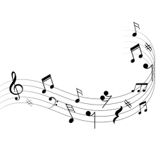

AboutMe
Joseph Marino
Hello! This is my final project for my class SI 339: Web Design, Development, and Accessibility. I have decided to create a collection of music from the 60s to 90s that have impacted me. Music is a story because it is a reflection of the artist and of the listeners personal emotions & feelings.
More About Me